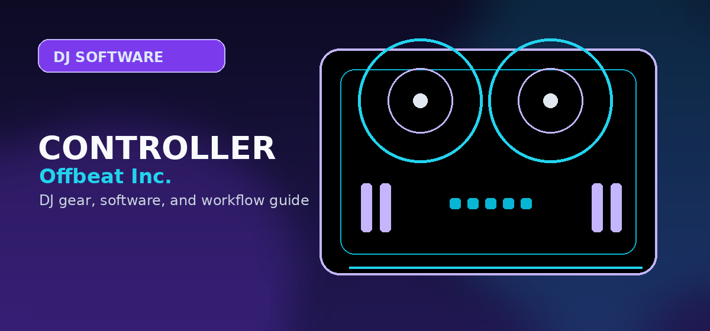

Best DJ Controllers for Serato
A Serato-first controller guide for scratch DJs, open-format mobile DJs, stems users, and beginners choosing a Serato hardware path.

Disclosure: This page uses affiliate links. We may earn a commission at no extra cost to you. Full disclosure →
A Serato-first controller guide for scratch DJs, open-format mobile DJs, stems users, and beginners choosing a Serato hardware path.
Best Serato controller recommendations
Serato controller buying is about hardware unlocks, performance layout, platter feel, stems workflow, and whether the user wants beginner practice, mobile gigs, or scratch/open-format performance. Do not recommend Serato hardware solely by price; recommend by workflow.
RANE ONE / RANE Performer path
The RANE path is the strongest recommendation for DJs who want moving platter feel, scratch routines, performance pads, and a serious Serato-first workflow. It is overkill for casual beginners but exactly the right direction for open-format and battle-influenced DJs.
Confirm today’s price, stock, and return policy before buying.
DDJ-FLX4 or DDJ-FLX2
For a beginner who may use Serato but does not want a scratch-focused premium controller yet, the FLX4 is safer than the FLX2 because it offers a stronger long-term layout. The FLX2 is credible for casual practice and app-based workflows.
DDJ-GRV6
The GRV6 is primarily compelling as a rekordbox creative controller, but it also works with Serato DJ Pro and offers Stems FX workflows. It is worth considering for DJs who want a four-channel AlphaTheta controller with modern performance controls and cross-software flexibility.
Serato buyer table
| Buyer type | Best controller direction | Why | Next page |
|---|---|---|---|
| Scratch learner | Motorized platter controller | Develops turntable-like touch instead of static jog habits. | Motorized controllers |
| Open-format mobile DJ | Serato Pro controller with mic inputs and reliable outputs | Event work needs fast library handling and dependable I/O. | Serato review |
| Beginner | FLX4, Mixtrack Pro FX, or FLX2 depending budget | Keeps cost low while leaving a software upgrade path. | Beginner controllers |
| Creative stems user | Controller with strong pad layout and Serato DJ Pro support | Stems and pad modes matter more than the cheapest price. | Lite vs Pro |
Serato software note for 2026
Serato’s value is no longer only “stable laptop DJ software.” The editorial recommendation now needs to account for stems, library management changes, streaming service availability, hardware unlocks, and the difference between Serato DJ Lite and Pro. Link beginner readers to Serato DJ Lite vs Pro before pushing a premium controller.
Serato controller scoring method
Serato controller recommendations should weight performance layout higher than general beginner convenience. For many Serato users, the controller is chosen for pads, platter feel, stems workflow, scratch response, and fast library handling. A cheap Serato-compatible controller can be a good practice unit, but it should not be ranked above a better performance controller for readers whose stated goal is open-format or scratch work.
Licensing also matters. Some hardware unlocks Serato DJ Pro; some ships with or is limited to Serato DJ Lite; some requires a paid upgrade. The page copy should avoid vague “works with Serato” language and instead push readers to verify whether the controller gives them the version and features they expect. That is especially important for stems, DVS, recording, and paid-event workflows.
Compare this guide with the motorized controller page, Serato DJ Lite vs Pro, and the software compatibility matrix before committing to a Serato rig. It serves a different buyer than the beginner controller guide. Beginner Serato recommendations belong here only when the reader has already chosen Serato as the likely software path.
Serato upgrade traps to avoid
The cheapest Serato-compatible controller is not always the cheapest Serato setup. Some models ship with Serato DJ Lite and require a paid upgrade for Pro features. Others unlock Serato DJ Pro when connected. That difference matters if you plan to record mixes, use advanced features, or play paid sets.
Check the exact controller listing before buying. Look for Pro unlock status, DVS support if you use turntables, microphone routing for mobile gigs, and whether the controller layout gives you direct access to the Serato features you care about. A controller that technically works with Serato can still be a bad buy if the most important controls are buried behind shift layers.
Serato controller buying checklist
For Serato, the controller matters because hardware unlocks, pad modes, jog feel, effects access, and DVS support vary widely.
- Check unlock status: confirm whether the controller unlocks Serato DJ Pro or only works with Lite until you pay for the upgrade.
- Check performance controls: scratch and open-format DJs should prioritize jog feel, paddle effects, pad response, and microphone control.
- Check output needs: bedroom practice can survive RCA outputs; paid events usually need stronger master/booth/mic routing.
Official product and support pages
Use Serato’s official hardware list as the source of truth before buying.
RANE hardware is the scratch/performance path; FLX4 is the safer beginner path.
Confirm whether the controller unlocks Serato DJ Pro or only ships with Lite.
Use these official pages to confirm current specifications, software compatibility, and support details before buying.
Frequently Asked Questions
What controller is best for Serato?
For scratch and open-format performance, a RANE-style motorized controller is the strongest Serato path. Beginners can start with FLX4, FLX2, or Mixtrack-style controllers depending budget.
Is Serato good for beginners?
Yes, especially through Serato DJ Lite, but beginners should understand whether their controller unlocks the features they want.
Should Serato users buy rekordbox controllers?
Only if the controller officially supports Serato and the user understands any license or feature restrictions.
What should I check before choosing DJ software?
Check controller compatibility, library tools, streaming support, stem features, recording limits, subscription cost, and whether the software matches the venues or hardware you expect to use.
Can I start with free DJ software?
Yes, but free versions often restrict hardware, recording, effects, or advanced library features. Use free software to learn basics, then upgrade when the limitations slow you down.
Serato buyer fit check
Buy for Serato when the workflow depends on scratch feel, performance pads, stems, open-format crates, or mobile-gig flexibility. Before clicking to retailers, verify whether the controller unlocks Serato DJ Pro, ships with Lite only, or needs a paid upgrade. Club-prep buyers should compare the rekordbox controller path, while budget buyers should check controllers under $500 so the software license and hardware price make sense together.